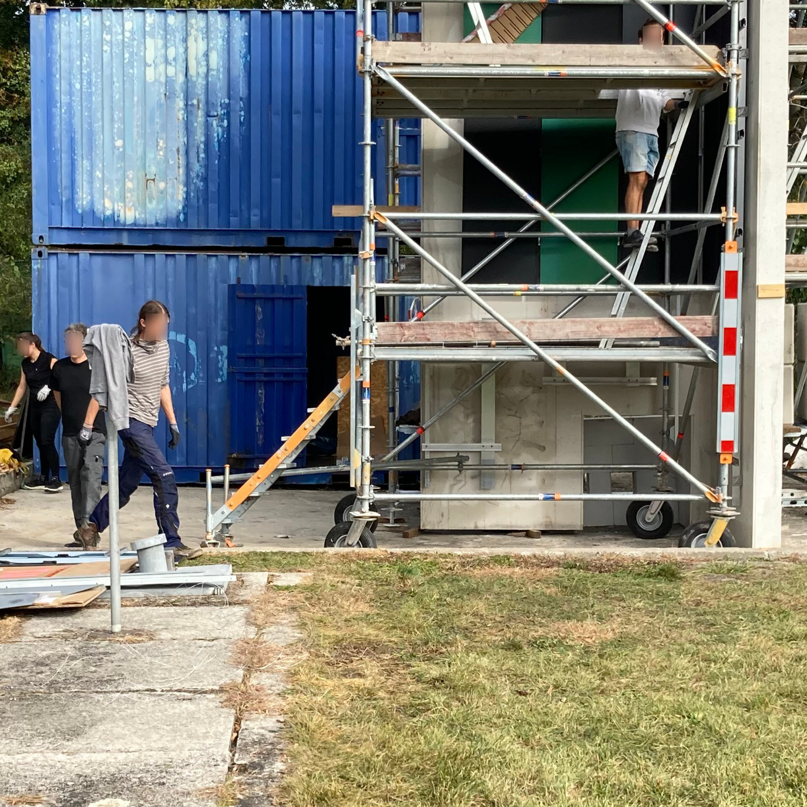
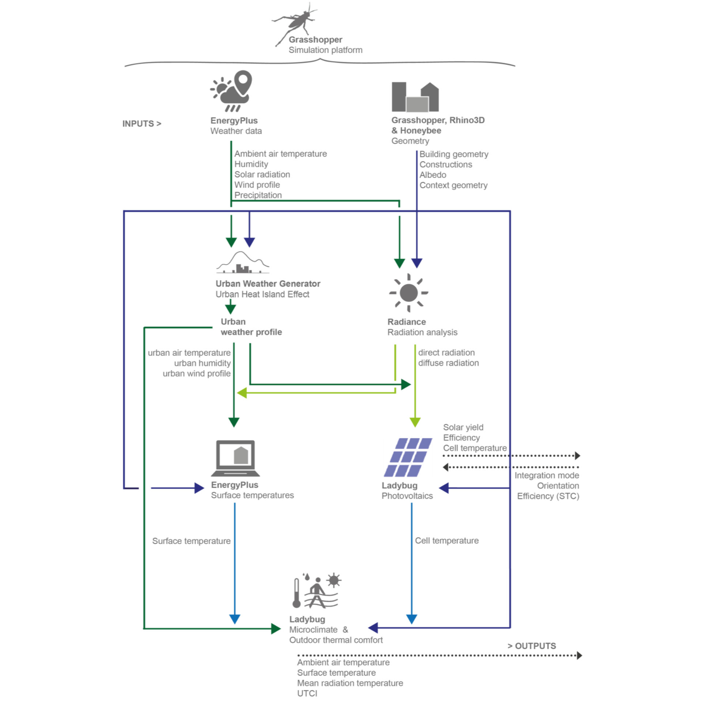
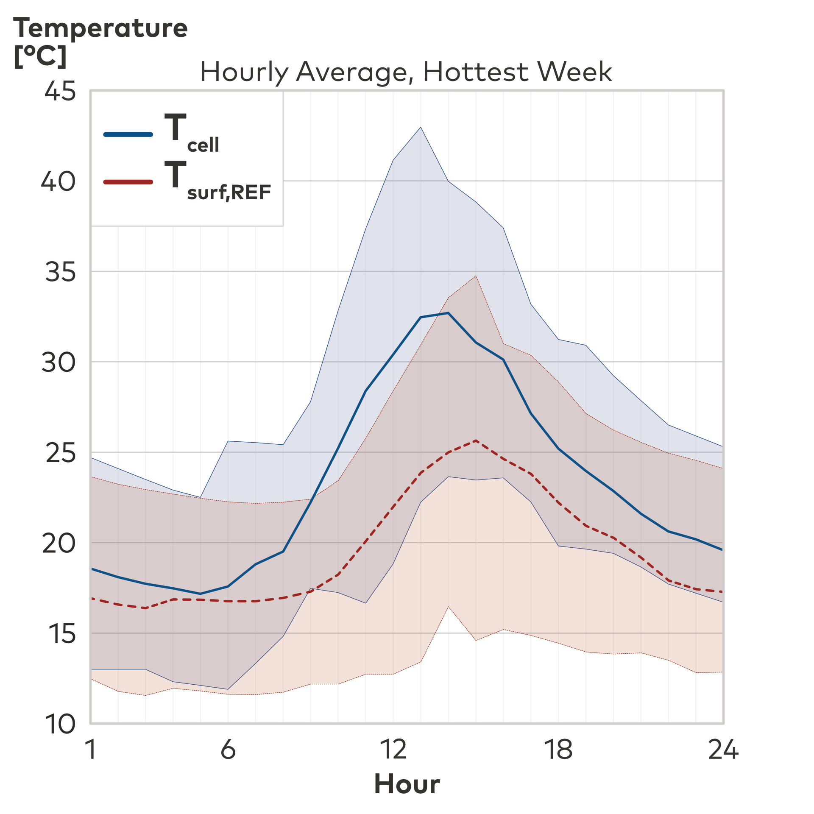

⬤ Diese Studie der TU München aus 2024 untersucht die Auswirkungen fasadenintegrierter
Photovoltaikmodule auf das urbane Thermomikroklima und den thermischen Komfort im Freien. Anhand
simulationsbasierter Analysen eines Wohngebiets in München werden PV-Fassaden mit
konventionellen Baustoffen verglichen.
PV-Module erreichen tagsüber höhere Zelltemperaturen als Referenzfassaden aufgrund geringeren
Albedos (0,1 vs. 0,3). Dadurch steigt die mittlere Strahlungstemperatur im Sommer um maximal 5,5
K und im Winter um 6,7 K; die Lufttemperatur bleibt unverändert. Der Universal Thermal Climate
Index erhöht sich um bis zu 1,5 K (Sommer) bzw. 2,2 K (Winter).
Nachts treten keine Erwärmungseffekte auf – nächtliche Erholung für die menschliche Gesundheit
wird nicht beeinträchtigt. Jährlich verbessert sich die Outdoor Thermal Comfort Autonomy um 0,9
Prozentpunkte durch reduzierte Kältbelastung im Winter. Eine Parameterstudie zeigt: Höhere
PV-Wirkungsgrade bis 30% und optimierte Hinterlüftung mindern die Erwärmung, doch PV-Fassaden
verursachen durchgängig höhere Strahlungstemperaturen als konventionelle Fassaden.
Die Ergebnisse unterstreichen das Potenzial von PV-Fassaden für Klimaschutz unter
Berücksichtigung mikroklimatischer Planungs-Aspekte.
⬤ This study by the Technical University of Munich from 2024 examines the effects of
facade-integrated photovoltaic modules on the urban thermal microclimate and outdoor thermal
comfort. Using simulation-based analyses of a residential area in Munich, PV facades are
compared with conventional building materials.
PV modules reach higher cell temperatures during the day than reference facades due to lower
albedos (0.1 vs. 0.3). This increases the average radiation temperature by a maximum of 5.5 K in
summer and 6.7 K in winter; the air temperature remains unchanged. The Universal Thermal Climate
Index increases by up to 1.5 K (summer) or 2.2 K (winter).
No warming effects occur at night – nighttime recovery for human health is not impaired.
Annually, outdoor thermal comfort autonomy improves by 0.9 percentage points due to reduced cold
stress in winter. A parameter study shows that higher PV efficiencies of up to 30% and optimized
rear ventilation reduce heating, but PV facades consistently cause higher radiation temperatures
than conventional facades.
The results underscore the potential of PV facades for climate protection, taking microclimatic
planning aspects into account.
Dr.-Ing. E. Faßbender